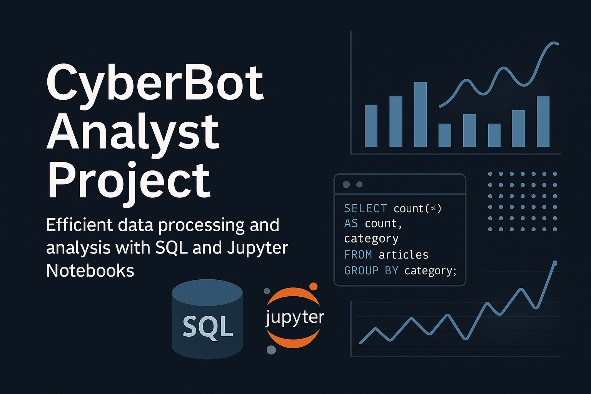
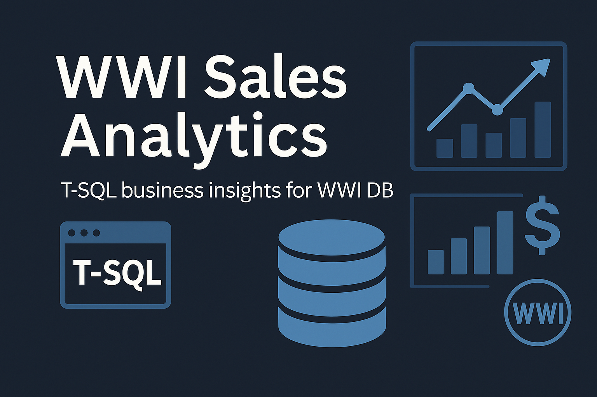
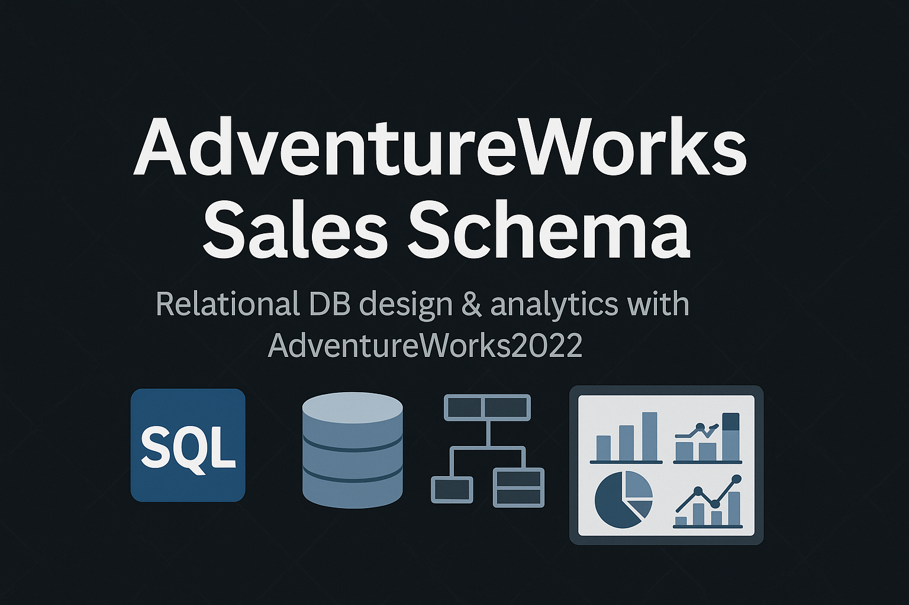
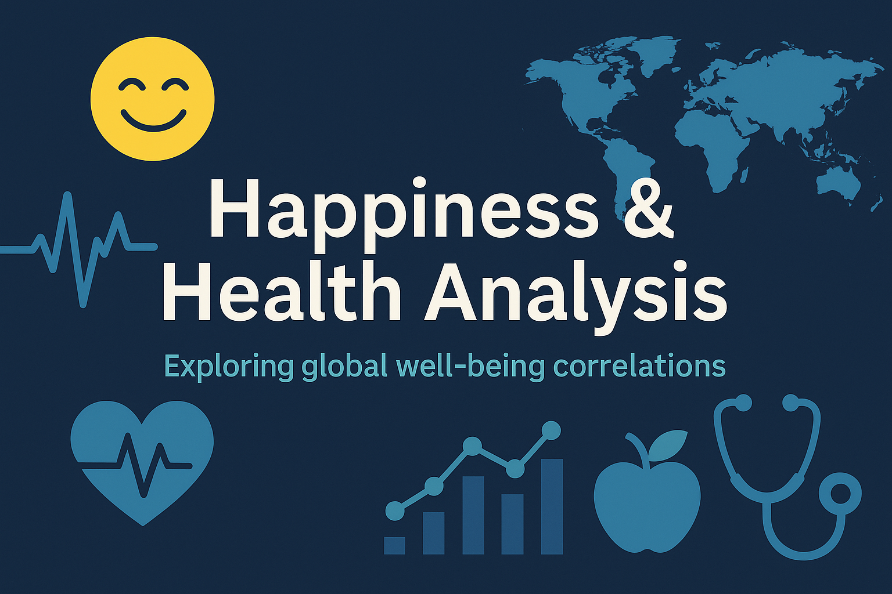

Projects
Cyber News Bot
CyberNewsBot is a modular data pipeline that ingests RSS feeds, uses newspaper3k to fetch and clean full article text, applies advanced AI-driven NLP with the facebook/bart-large-cnn model for concise summaries on GPU or CPU, performs SHA-256–based deduplication, and ensures concurrency-safe execution and reliable delivery with retry logic to Telegram and Microsoft Teams.

CyberBot Analyst Project
This repository delivers an end-to-end data analysis pipeline for CyberNewsBot. It includes:
SQL schema to define normalized tables (PostedNews, SkippedNews, Topics, Articles, Trends) for clean, deduplicated storage.
Jupyter Notebooks that demonstrate: JSON ingestion, pandas-driven cleaning and feature engineering, SQLAlchemy loading, BART-based summaries, SentenceTransformer embeddings, and DBSCAN clustering to uncover topic patterns.
A final step that writes enriched data back to SQL, ready for interactive Power BI dashboards.

CyberBot PowerBI
This Power BI dashboard builds on the CyberBot Analyst Project, which provided the core SQL schema, Python ETL functions, and Jupyter notebooks for ingesting, cleaning, and analyzing cybersecurity news data.

WWL Sales Analytics
This repository provides a ready-to-use analytics toolkit of 10 advanced T-SQL queries against Microsoft’s Wide World Importers sample database. Delivers insights on yearly revenue, customer performance, product profitability, churn detection, and more—enabling data-driven decision-making.

AdventureWorks Sales Schema
This project showcases the end-to-end creation of a relational database using SQL. It includes a structured schema, data loading from AdventureWorks2022, and analytical queries that highlight the design’s capabilities. Ideal as both a portfolio demonstration and a practical sandbox for database modeling, ETL workflows, and SQL-driven analytics.

Happiness and Health Analysis
This project offers a full analytics pipeline for global happiness and health indicators. It uses Python (pandas, NumPy) for data collection and cleaning, applies statistical methods (correlation, regression) to probe links between social support, corruption, life expectancy, GDP, and happiness, and delivers interactive visualizations with Matplotlib, seaborn, and Plotly.
About Nikita Sonkin: Driving Innovation with Data & AI
I am Nikita Sonkin, an AI & Data Intelligence Specialist dedicated to empowering organizations through cutting-edge technology. My passion lies in transforming complex data into actionable insights and building intelligent, automated solutions that solve real-world business challenges. I believe that leveraging data science and Artificial Intelligence is not just about adopting new tools, but about creating sustainable competitive advantages in today's dynamic market.
With a strong foundation in Computer Science and Information Systems, my expertise spans the entire data lifecycle:
- AI-Powered Automation: Designing and implementing intelligent bots and autonomous agents for streamlined processes and real-time information distribution (e.g., to platforms like Telegram and Microsoft Teams).
- Advanced Data Engineering & Analytics: Building robust data pipelines (ETL), defining structured SQL schemas, and performing in-depth data analysis with Python (Pandas, NumPy, Matplotlib, Seaborn, Plotly, scikit-learn).
- Machine Learning & Natural Language Processing (NLP): Developing custom ML models, applying advanced NLP techniques (like SentenceTransformer for embeddings and BART for summarization), and leveraging AI frameworks (LangChain, OpenAI API, Hugging Face) for deeper insights.
- Business Intelligence & Visualization: Crafting intuitive and dynamic Power BI dashboards for clear data storytelling, trend detection, and informed decision-making.
- Cybersecurity Intelligence: Specializing in aggregating, analyzing, and presenting critical cybersecurity news and trends to enhance organizational preparedness and strategic planning.
My journey includes hands-on experience in diverse roles, from Intern at Deutsche Telekom where I developed AI/ML system user manuals and authored cybersecurity white papers, to CRM Systems Specification and Implementation at REWIRE, and providing IT Specialist support at Teva. This practical background ensures I deliver not just technical solutions, but effective, user-centric systems with a clear business impact.
I am constantly exploring new technologies and deepening my understanding of intelligent systems that can predict trends, uncover hidden patterns, and make critical information accessible for strategic decision-making. My goal is to partner with forward-thinking organizations to build data-driven futures.
Ready to transform your data into a powerful asset? Let's connect and discuss your next challenge.
Our Services: Transforming Data into Strategic Advantage
At NS Global Consulting, we leverage cutting-edge AI and data analytics to empower businesses like yours. Our tailored solutions are designed to automate complex processes, unlock hidden insights from your data, and provide you with the intelligence needed to make smarter, faster decisions.
1. Intelligent Automation & Real-time Information Delivery
Streamline operations and ensure critical insights reach the right people at the right time. We develop custom, modular automation solutions tailored to your specific needs, including:
- Custom Information Bots: Aggregating, processing, and distributing tailored information.
- Real-time Alerts: Setting up automated alerts for key events, trends, or anomalies.
- Seamless Platform Integration: Delivering insights directly to your team's communication channels like Telegram and Microsoft Teams and others.
Benefit: Enhance operational efficiency, reduce manual reporting, and keep your teams informed and agile with instant, relevant updates.
2. AI-Powered Data Platforms & End-to-End Analytics
Transform raw data into actionable intelligence with our comprehensive platform development. We design, build, and implement custom AI and data intelligence solutions that cover the entire data lifecycle:
- Automated Data Ingestion: Building robust pipelines for data collection from diverse sources (web scraping, APIs, RSS, Google Alerts).
- Advanced Data Engineering (ETL): Ensuring data integrity and efficiency through cleaning, transformation, and loading into optimized SQL databases.
- Custom AI/ML & NLP Models: Developing bespoke models for tasks like data clustering, sentiment analysis, trend prediction, and automated summarization (using cutting-edge NLP models like BART, SentenceTransformer).
- Scalable Cloud Solutions: Implementing high-performance solutions on cloud platforms (e.g., AWS, Spark).
Benefit: Gain a significant competitive edge by converting overwhelming data into clear, strategic intelligence, automating key processes, and enabling fully data-driven decision-making.
3. Interactive Business Intelligence Dashboards (Power BI)
Unlock the full potential of your data with intuitive and dynamic Power BI dashboards. We create compelling visualizations that transform complex numbers into clear, actionable insights, enabling:
- Real-time Trend Tracking: Instantly identify "Spike" and "Growth" trends, track key metrics, and monitor market shifts.
- Granular Data Exploration: Easily filter, drill down, and explore data across various dimensions (geography, source, time).
- Natural Language Querying (Q&A): Ask business questions in plain English and receive instant visual answers, democratizing data access.
- Automated Custom Reports: Designing and automating reports tailored to your specific business intelligence needs.
Benefit: Empower every decision-maker with easy access to critical insights, fostering data literacy and enabling faster, more informed strategic planning across your organization.
4. Strategic Data & AI Consulting
Beyond implementation, we offer expert strategic guidance to help your organization navigate and thrive in the data and AI landscape. Our consulting services provide clarity and direction:
- Opportunity Identification: Pinpoint where AI and data analytics can create the most impact for your specific business goals.
- Data Strategy & Roadmapping: Crafting a clear roadmap for effective data collection, storage, analysis, and utilization.
- Workflow Optimization: Enhancing the efficiency and effectiveness of your current data processes and systems.
- Expert Technical Guidance: Offering advice on technology selection, best practices, and overcoming complex data challenges.
Benefit: Make informed strategic decisions about your data infrastructure and AI adoption, maximizing your ROI and ensuring long-term technological alignment with your business objectives.
Contact